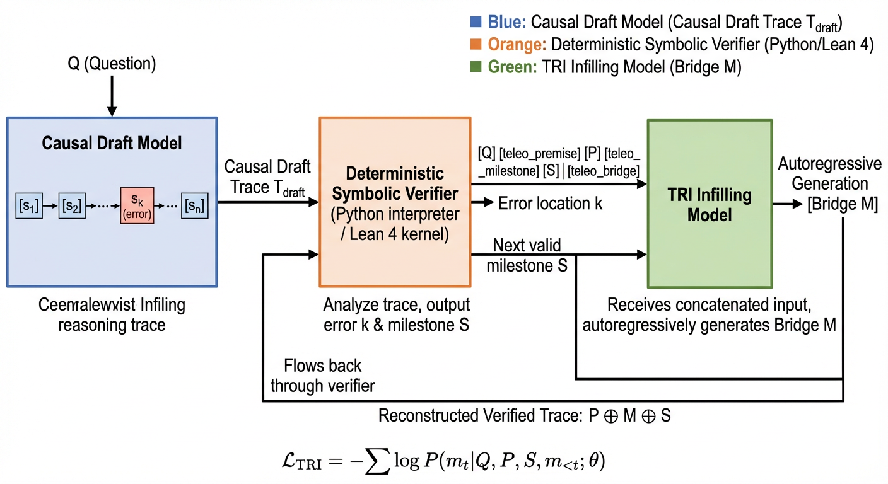

Uses a Lean 4 symbolic verifier as the reward oracle for DPO training on formal math reasoning triples.
Abstract
Autoregressive chain-of-thought (CoT) reasoning in large language models (LLMs) is fundamentally forward-directed: each step conditions only on prior tokens. This unidirectional inductive bias renders even capable models susceptible to error snowballing, wherein a single logical or arithmetic mistake in an early step irreversibly corrupts the entire reasoning chain. We introduce Teleological Reasoning Infilling (\TRI{}), a training framework that endows decoder-only transformers with a native goal-conditioned bridging capability. The key insight is to reframe erroneous reasoning segments as fill-in-the-middle (FIM) tasks: given a verified prefix premise $P$, a verified downstream milestone $S$, and the original query $Q$, the model must synthesise the logical bridge $M$ that connects $P$ to $S$ rigorously and completely. To achieve this with standard causal architectures, we introduce a Prefix-Suffix-Middle (PSM) sequence rearrangement with three non-overlapping sentinel tokens, enabling $M$ to attend to both $P$ and $S$ without any structural modification to the self-attention mechanism. Training proceeds in two stages: (i) Supervised Fine-Tuning (SFT) on symbolically verified $(P, S, M)$ triples extracted from formal mathematics corpora, and (ii) Direct Preference Optimisation (DPO) with a deterministic symbolic verifier (Lean 4 / Python) as the sole reward oracle, eliminating LLM-judge sycophancy. At inference, TRI operates as a surgical repair module within a dual-system loop: a causal draft model generates an initial trace, the verifier pinpoints failures, and TRI infills only the damaged segment, leaving verified sections intact. Comprehensive experiments on three benchmarks demonstrate that TRI achieves state-of-the-art performance across all tasks, while reducing per-problem token expenditure by 31.2%.
Problem
Autoregressive chain-of-thought reasoning in LLMs is forward-only, making it vulnerable to error snowballing where a single early mistake corrupts all subsequent steps. Models lack a native mechanism to leverage bidirectional logical constraints during generation.
Approach
The authors introduce Teleological Reasoning Infilling (TRI), which reframes erroneous reasoning segments as fill-in-the-middle tasks. Given a verified prefix premise P, a verified downstream milestone S, and query Q, TRI synthesizes the logical bridge M connecting them. A Prefix-Suffix-Middle (PSM) sequence rearrangement with sentinel tokens enables bidirectional attention in standard decoder-only transformers without architectural changes. Training uses supervised fine-tuning on verified triples from formal mathematics, followed by DPO with Lean 4 and Python symbolic verifiers as reward oracles.

Figure 2: System Architecture of TRI . The inference-time repair loop consists of three components: (1) a causal draft model that produces an initial full-length trace; (2) a deterministic symbolic verifier that locates the first logical failure at step k ; (3) the TRI infilling model that, given the PSM-reordered input [Q,\langle\texttt{premise}\rangle,P,\langle\texttt{milestone}\rangle,S,\langle
Results
TRI (Full) achieves 89.3% on MATH L3 (+3.4 over best baseline), 74.9% Pass@1 on HumanEval-Fix (+8.1), and 57.1% PCR on Lean-Workbook (+5.9). Token expenditure per problem is reduced by 31.2% compared to the best baseline, and the repair success rate reaches 73.8%.